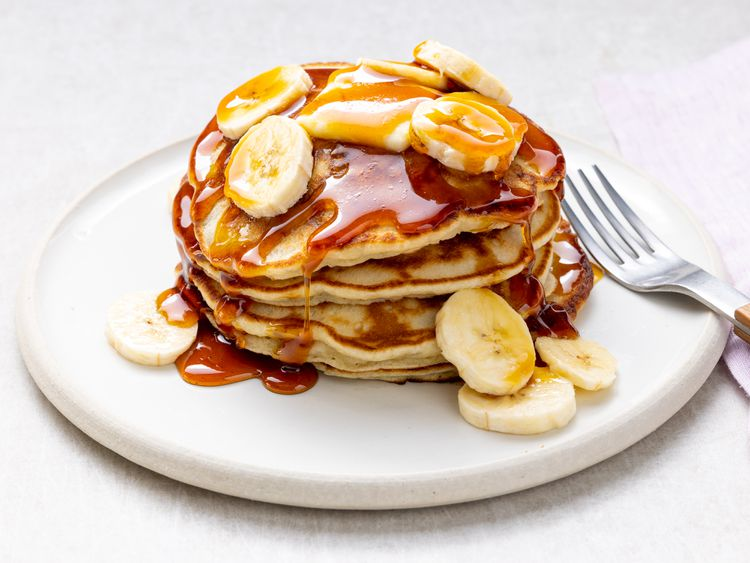

Banana Pancakes
Home

Fluffy banana pancakes made from scratch with mashed ripe bananas that are ready in minutes for a delicious twist on ordinary pancakes.
Ingredients:
- 1 cup all-purpose flour
- 1 tablespoon white sugar
- 2 teaspoons baking powder
- ¼ teaspoon salt
- 1 egg, beaten
- 1 egg, beaten
- 2 tablespoons vegetable oil
- 2 ripe bananas, mashed
Directions:
- Gather all ingredients.
- Combine flour, white sugar, baking powder, and salt in a bowl. Mix together egg, milk, vegetable oil, and bananas in a second bowl. Stir flour mixture into banana mixture; batter will be slightly lumpy.
- Heat a lightly oiled griddle or frying pan over medium high heat. Pour or scoop the batter onto the griddle, using approximately 1/4 cup for each pancake.
- Cook until pancakes are golden brown, 3 to 5 minutes per side. Serve hot.
- Serve hot and enjoy!